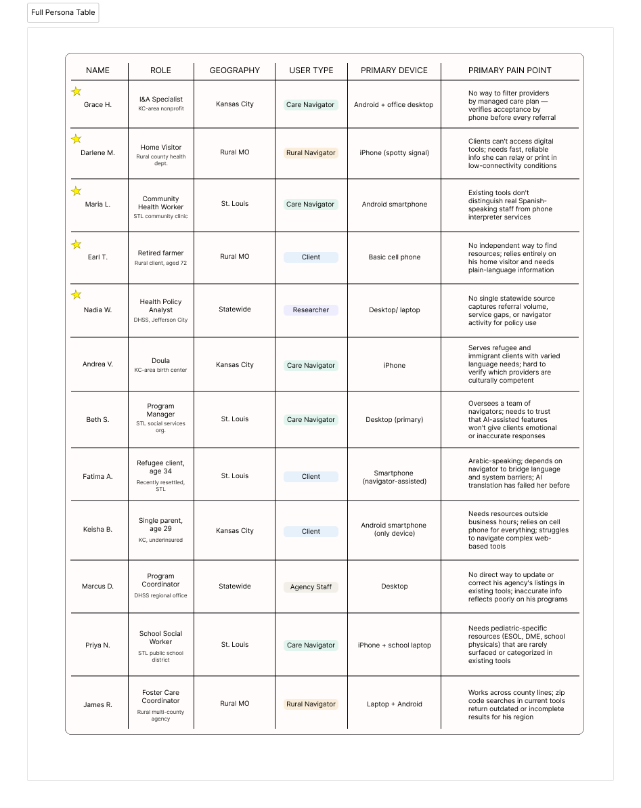
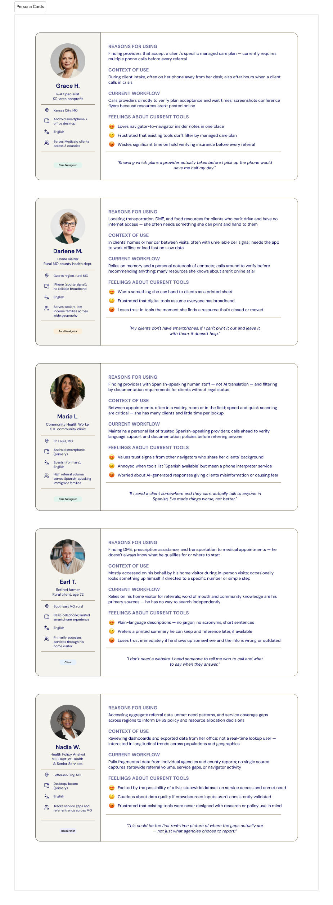
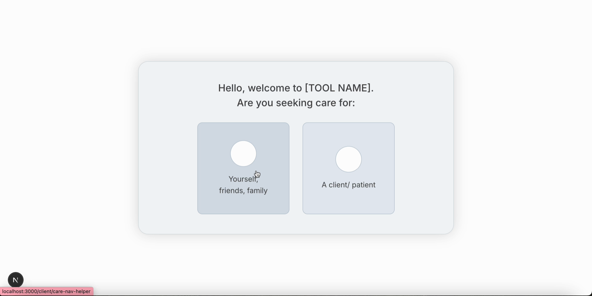
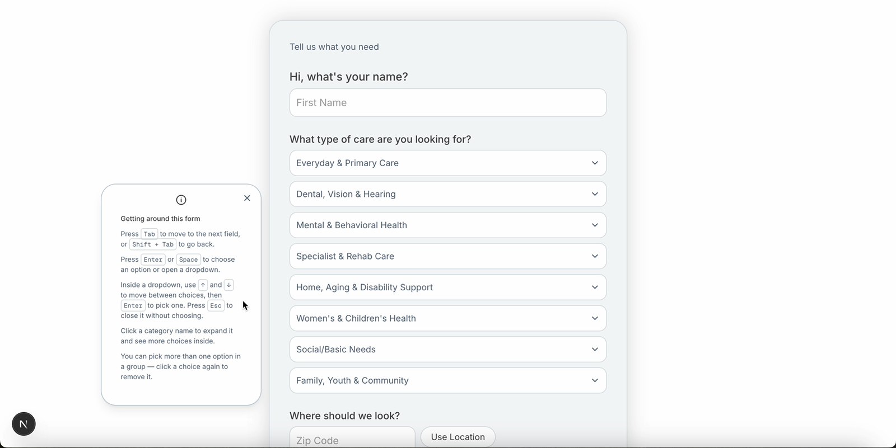
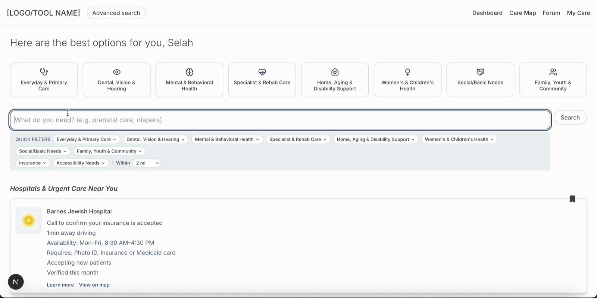
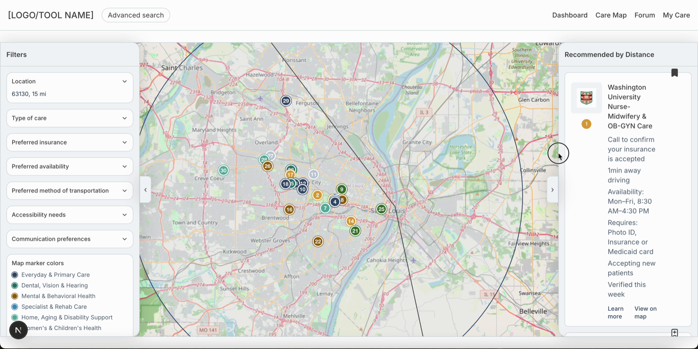
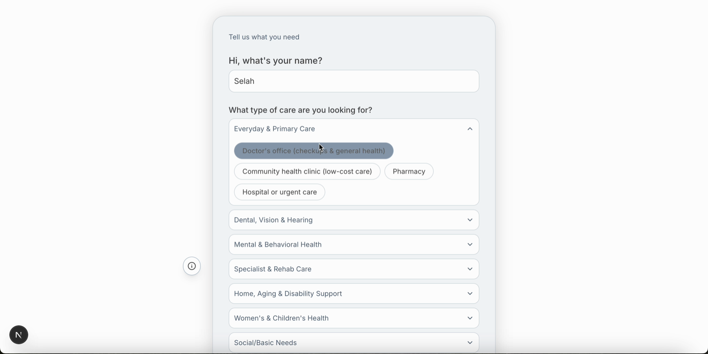
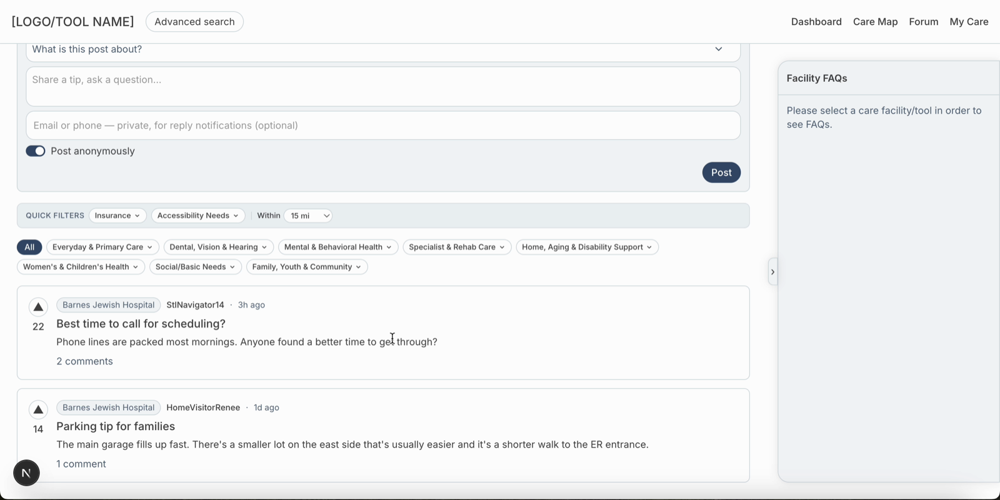
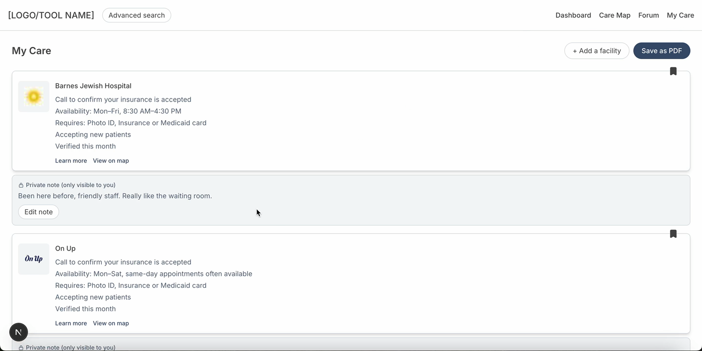

WashU Care Navigation App
A tool that helps care navigators find accurate, up-to-date clinical and social services across Missouri, built to work well on both desktop and mobile screens.
The Short Version
Care navigators, community health workers, doulas, home visitors, and other frontline staff, spend real time every week just confirming basic facts: whether a clinic takes a client's insurance, whether a listed service still exists, whether a phone number still works. Existing directories are often outdated, incomplete, or split across clinical and social services. Navigators end up relying on personal knowledge, screenshotted flyers from conferences, and word of mouth to fill the gaps. This project set out to build one tool that keeps up with them.
Context & Problem
Community health workers, doulas, home visitors, and similar boundary-spanning providers connect people across Missouri to both clinical and non-clinical services, but no single tool serves both well. Existing options like FindHelp, Unite Us, and 211 each help to a point: some are built for providers, not clients; some go stale quickly; and none let navigators filter by managed care plan, which co-design participants named as the single biggest time sink in their current workflow.
This project is the foundation phase of an ongoing initiative to build that tool. This phase covered three co-design sessions with care navigators, synthesis of what we learned into personas and requirements, and an early proof-of-concept build aligned to Missouri DHSS's visual style. A full scope-definition meeting, broader design work, and beta testing with navigators are planned for later phases.
The facility/tool data shown is placeholder, pending integration with real data sources; this project does not use and will never involve patient level data.
Process
We ran three virtual co-design sessions with care navigators, doulas, and program managers, then synthesized what we learned into a set of twelve user personas covering care navigators, rural navigators working with spotty signal and printed handouts, clients with no independent access to the tool, an agency staff member, and a policy researcher. Building out that range early kept later design decisions grounded in real, sometimes conflicting, constraints instead of a single “typical user.” Two decisions came directly out of that research and shaped the proof of concept:
Build for navigators first, then clients, then researchers
Co-design participants and the project team agreed the first iteration should serve community health workers and similar navigators, with a client-facing version and a research/analytics view following once the core tool was working.

Treat managed care plan filtering as a core feature, not an add-on
One navigator, Grace, described searching for a provider that accepted a client's managed care plan as the single most time-consuming part of her job: calling ahead to confirm coverage before ever handing a client a referral. That was specific enough to move plan filtering from a nice-to-have into a primary requirement.

Final Solution
The proof of concept lets someone start from one of two entry points: looking for care for themselves or a family member, or helping a client as a navigator. From there, a short onboarding step collects only the basics needed to personalize results: the person's location or zip code, their name, their preferred language, and how far they're willing to travel. Choosing a specific type of care happens afterward, on the dashboard itself, rather than as part of onboarding.

Accessibility is treated as a core part of the experience, not an afterthought, given how wide a range of users this tool needs to serve, from tech-comfortable navigators to seniors and people with disabilities. Both onboarding and Advanced Search include an information icon that expands into a longer panel explaining how to navigate the site using only a keyboard, so people who rely on assistive technology aren't left to figure it out on their own.

The dashboard groups results by category and lets people search by keyword or apply quick filters for insurance, accessibility needs, and distance. Each result shows the details a navigator would otherwise have to call and confirm: hours, what to bring, whether the provider is accepting new patients, and when the listing was last verified. A companion Care Map view plots the same results geographically, with color-coded, numbered markers by category, an adjustable search radius, and filters for insurance, availability, preferred transportation, accessibility needs, and communication preferences.


An Advanced Search page goes a level deeper on filtering. Users can narrow results by care category (such as Everyday & Primary Care, Dental, Vision & Hearing, Mental & Behavioral Health, Specialist & Rehab Care, Home, Aging & Disability Support, Women's & Children's Health, Social/Basic Needs, and Family, Youth & Community), by specific accessibility needs, by insurance and managed care plan type, and by preferred mode of transportation, rather than being limited to the broader categories shown on the dashboard.

The facilities and listings shown in the current screenshots and demos are placeholder data and do not yet cover the full geographic area the finished tool is meant to span. That's why some categories or regions may appear empty right now. This is a gap in the current data set, not a gap in the tool's design.
The tool also builds in the trust signals and insider knowledge that came directly out of co-design: a Community Forum where people can post tips or questions tied to a specific facility, upvote helpful posts, and see a facility's frequently asked questions answered and labeled as “Verified by navigator” or left “Unverified” until someone confirms it. This is the practical, unofficial knowledge, like the best time of day to call a given office, that experienced navigators already rely on but that never makes it into an official directory. A “My Care” area lets people save facilities they use often and attach private notes for their own reference.

The “My Care” section also accounts for clients who may be using a public library computer or a borrowed device rather than their own. Since this kind of access isn't guaranteed to be available again later, saved facilities and notes in “My Care” can be downloaded as a PDF and printed, so a client with limited digital access or comfort still walks away with a physical copy of the care options and facilities they found.

All content, from category labels to form questions to facility details, is written in plain language, targeting roughly a 5th-grade reading level, since the tool serves people across a wide range of reading levels and digital comfort, including rural and senior clients. This is treated as a structural requirement, not a style preference.
Visual and content style are aligned with Missouri DHSS's public-facing brand, using DHSS's verified navy as the primary color, a plain and highly legible sans-serif typeface, and a restrained, institutional palette, so the tool feels credible and consistent with the agency that will ultimately host it.
Right now, the navigator experience and the client experience are nearly identical: both use the same dashboard, filters, and facility detail pages, and differ mainly in wording rather than in what's shown or how it works. Designing more meaningful differences between the two, for example giving navigators tools a client wouldn't need, is expected work for the next phase.
A review of the proof of concept identified a set of specific refinements for that next phase. On the dashboard, selecting a care category is meant to filter the results in place rather than open a new page, and categories are meant to be color-coded consistently across the dashboard, filters, and map, so a selected filter and its icons share one color and facilities with the most matching categories surface first. Facilities that fall under more than one category need a clearer way to show that instead of being sorted under just one. On the map, planned additions include showing estimated travel time by different transportation methods and highlighting public transit routes. Other identified refinements include letting users include or exclude digital-only resources from results, adding a dedicated prompt for anyone in a mental health crisis, showing a running count of nearby facilities and digital resources at the top of the dashboard, adding a forum thread to every facility's detail page, and adding a simple way to confirm whether a piece of facility information worked for a user, similar to how Couponfinder.com verifies its listings.
Full walkthrough: sped up 2×
End-to-end walkthrough: onboarding, dashboard, Care Map, Advanced Search, Community Forum, and My Care
Outcome
This phase produced session notes from all three co-design sessions, a set of twelve user personas, synthesized requirements, and a proof-of-concept build that reflects those requirements and DHSS's visual identity. That proof of concept is now ready to support a scope-definition meeting to define the next phase of design work, including a full prototype and eventual developer handoff.
The project's longer-term success measures, a beta test with 40 navigators over four weeks, and evidence that the tool is trusted enough that navigators stop defaulting back to Google, are goals for a future phase and have not been tested yet.
The design work on this project is being handed off to another designer to carry forward. The designer role on this project is a WashU work-study position held by a current student, and since I have now graduated, a new designer will take over for the next phase. The session notes, personas, requirements, this proof of concept, and the refinements identified in review are meant to give that next designer a running start rather than a blank page.
Reflection
This was my first time working with a government agency as a project partner, and my first time designing based on direct feedback from users outside the WashU community. Sitting in on the co-design sessions and hearing directly from care navigators about what mattered most to them was some of the UX research I've enjoyed most so far. Turning those notes into a full set of personas was a useful exercise too. It made clear just how wide the range of people this tool needs to serve really is.
I pulled interface inspiration from a lot of different places because I wanted this tool to feel clear and easy to use without feeling stale, ugly, or overly institutional, which is how a lot of government tools end up feeling. I wanted it to feel welcoming and simple to navigate without being overwhelming. Keeping the process human-focused, with real feedback shaping each iteration, was the part of this project I found most rewarding.
The hardest part was balancing the needs of such a wide range of users. There was no single decision that would satisfy everyone, so I had to get comfortable prioritizing the most important concerns for each group while accepting that not every choice would land the same way for every user.
There's still a lot of work left before this tool is ready to go out into the world, but I'm handing it off with confidence that the next designer will be able to pick up my notes and continue building from where I left off.